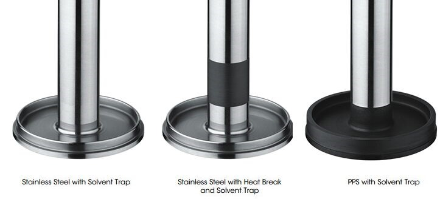
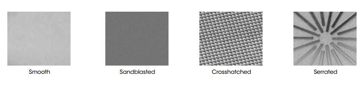
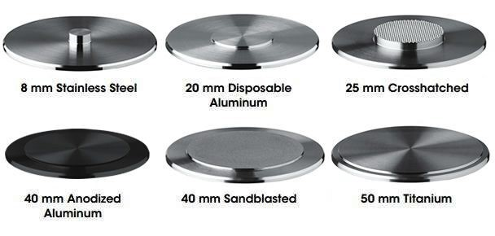
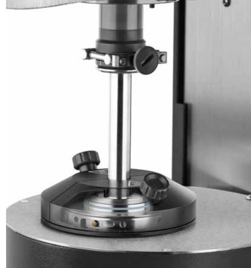
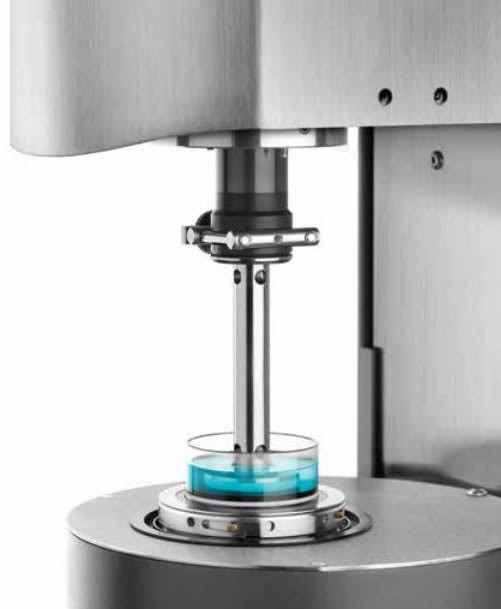

The APS is a Smart SwapTM Peltier temperature controlled environmental system with a temperature range of -10 to 150 °C,
with a maximum heating rate of 20°C/min and a temperature accuracy of +/- 0.1 °C. Unlike other Peltier temperature systems,
the APS features parallel plate (cone and plate) as well as DIN conforming concentric cylinder geometries to meet the most demanding applications.
The new quick-change lower plate comes standard with a 60 mm diameter hardened chromium surface and a unique bayonet fixture
that allows the user to quickly and easily adapt the plate surfaces to crosshatched or sandblasted finishes.
The APS also features an efficient heated solvent trap cover for blocking evaporation during testing of volatile materials.
Cone and Parallel Plate Geometries:
Several upper geometry types are available based on the needs of the test at hand. Heat break collars reduce heat transfer and improve temperature uniformity while maintaining the ruggedness and chemical resistance of a stainless steel plate. Low expansion and low thermal conductivity polyphenyl sulfone (PPS) plates further improve temperature uniformity.

Plate Surface Textures:
Both upper geometries and lower quick change plates are available with a range of surface textures. Roughened surfaces effectively eliminate slip, an artifact which can occur with many materials, particularly filled systems.

Quick Change Plates:
The APS features a Quick Change Plate system that allows several lower plate covers to be easily attached using a simple bayonet-style locking ring. These plates can be selected based on material, diameter, and surface finish. Disposable plates are also available for curing materials.

Peltier Solvent Trap and Evaporation Blocker:
The Solvent Trap cover and Solvent Trap geometry work in concert to create a thermally stable vapor barrier, virtually eliminating solvent loss during the experiment. The geometry includes a reservoir that is filled with a very low viscosity oil or the volatile solvent present in the sample. The Solvent Trap cover includes a blade that is placed into the solvent contained in the well without touching any other part of the upper geometry. A uniform temperature, saturated vapor, environment is established, preventing loss from the sample and condensation from the cover. The Solvent Trap sits directly on a centering ring at the top of the APS surface for easy positioning.

Immersion Cup:
The APS Immersion Cup allows samples to be measured while fully immersed in a fluid. It attaches easily to the top of the APS Plate with the bayonet fixture. A rubber ring provides the fluid seal and allows for easy sample loading, trimming, and subsequent sealing and filling. The Immersion Cup system can accommodate plates or cones up to 40 mm in diameter. This accessory is ideal for studying the properties of hydrogels.
